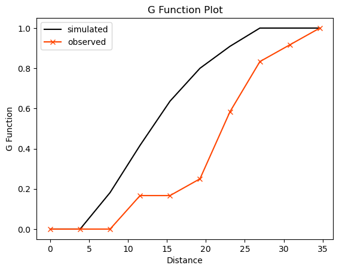
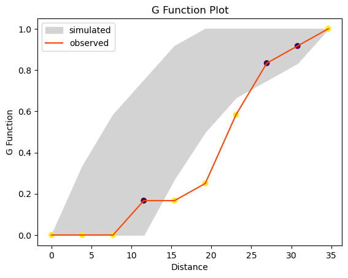
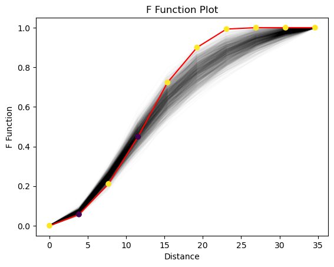
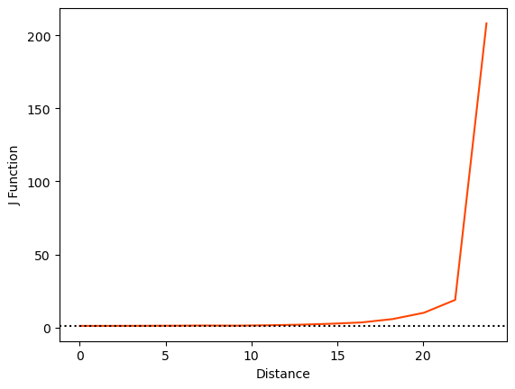
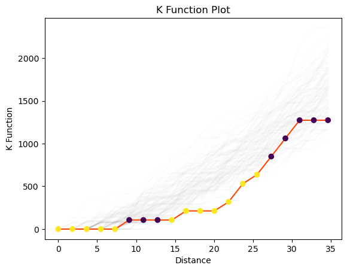
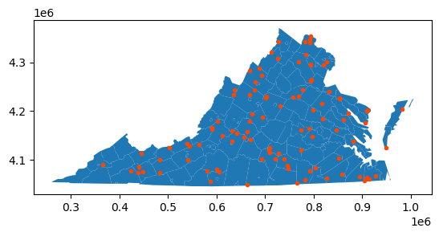
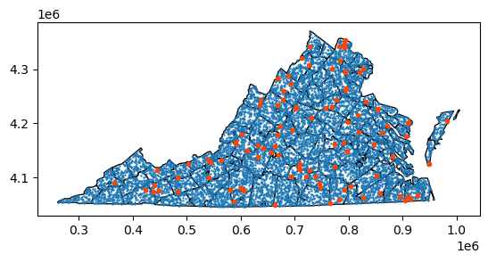
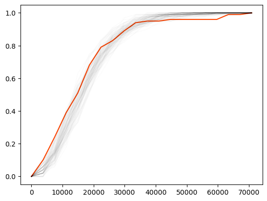

from scipy import spatial
import libpysal as ps
import numpy as np
%matplotlib inline
import matplotlib.pyplot as pltKeeping simulations
points = np.array([[66.22, 32.54], [22.52, 22.39], [31.01, 81.21],
[9.47, 31.02], [30.78, 60.10], [75.21, 58.93],
[79.26, 7.68], [8.23, 39.93], [98.73, 77.17],
[89.78, 42.53], [65.19, 92.08], [54.46, 8.48]])import pointpatsfrom pointpats import g_testg_res = g_test(points, support=10)g_res.supportarray([ 0. , 3.84791574, 7.69583148, 11.54374723, 15.39166297,
19.23957871, 23.08749445, 26.93541019, 30.78332593, 34.63124168])g_res.statisticarray([0. , 0. , 0. , 0.16666667, 0.16666667,
0.25 , 0.58333333, 0.83333333, 0.91666667, 1. ])g_res.pvaluearray([0.00e+00, 0.00e+00, 0.00e+00, 2.24e-02, 8.00e-04, 1.00e-04,
4.90e-03, 5.91e-02, 7.53e-02, 0.00e+00])g_res = g_test(points, support=10, keep_simulations=True)plt.plot(g_res.support, np.median(g_res.simulations, axis=0),
color='k', label='simulated')
plt.plot(g_res.support, g_res.statistic,
marker='x', color='orangered', label='observed')
plt.legend()
plt.xlabel('Distance')
plt.ylabel('G Function')
plt.title('G Function Plot')
plt.show()
# grab the middle 95% of simulations using numpy:
middle_95pct = np.percentile(g_res.simulations, q=(2.5, 97.5), axis=0)
# use the fill_between function to color between the 2.5% and 97.5% envelope
plt.fill_between(g_res.support, *middle_95pct,
color='lightgrey', label='simulated')
# plot the line for the observed value of G(d)
plt.plot(g_res.support, g_res.statistic,
color='orangered', label='observed')
# and plot the support points depending on whether their p-value is smaller than .05
plt.scatter(g_res.support, g_res.statistic,
cmap='viridis', c=g_res.pvalue < .01)
plt.legend()
plt.xlabel('Distance')
plt.ylabel('G Function')
plt.title('G Function Plot')
plt.show()
F function
from pointpats import f_test as ff_test = f(points, support = g_res.support, keep_simulations=True, hull='convex', n_simulations=999)plt.plot(f_test.support, f_test.simulations.T, alpha=.01, color='k')
plt.plot(f_test.support, f_test.statistic, color='red')
plt.scatter(f_test.support, f_test.statistic,
cmap='viridis', c=f_test.pvalue < .05,
zorder=4 # make sure they plot on top
)
plt.xlabel('Distance')
plt.ylabel('F Function')
plt.title('F Function Plot')
plt.show()
plt.show()
J Function
from pointpats import j_test as jjp1 = j(points, support=20)/tmp/ipykernel_22831/134666654.py:1: UserWarning: requested 20 bins to evaluate the J function, but it reaches infinity at d=34.6312, meaning only 20 bins will be used to characterize the J function.
jp1 = j(points, support=20)plt.plot(jp1.support, jp1.statistic, color='orangered')
plt.axhline(1, linestyle=':', color='k')
plt.xlabel('Distance')
plt.ylabel('J Function')Text(0, 0.5, 'J Function')
K Function
from pointpats import k_test as kk_test = k(points, keep_simulations=True, n_simulations=99)plt.plot(k_test.support, k_test.simulations.T, color='k', alpha=.01)
plt.plot(k_test.support, k_test.statistic, color='orangered')
plt.scatter(k_test.support, k_test.statistic,
cmap='viridis', c=k_test.pvalue < .05,
zorder=4 # make sure they plot on top
)
plt.xlabel('Distance')
plt.ylabel('K Function')
plt.title('K Function Plot')
plt.show()
CSR Example
import geopandas
import libpysal as ps
df = geopandas.read_file(ps.examples.get_path("vautm17n.shp"))
state = df.geometry.cascaded_union/tmp/ipykernel_22831/3264935310.py:4: FutureWarning: The 'cascaded_union' attribute is deprecated, use 'unary_union' instead
state = df.geometry.cascaded_unionfrom pointpats.random import poissoncsr = poisson(state, size=100)csr[0:5]array([[ 794296.03601669, 4294601.31407386],
[ 818282.99012297, 4184155.14330324],
[ 905034.27199013, 4056241.87208028],
[ 663747.80016769, 4047823.01271924],
[ 766179.63918103, 4051312.78930823]])df.plot()
plt.scatter(*csr.T, color='orangered', marker=".")
plt.show()
realizations = poisson(state, size=(100,100))df.plot(facecolor='none', edgecolor='k')
plt.scatter(*realizations.T, marker='.', s=2)
plt.scatter(*csr.T, color='orangered', marker='.')
plt.show()
from pointpats import gobserved_g = g(csr)
comparison_g = [ g(realization, support=observed_g[0])
for realization in realizations]
plt.plot(*observed_g, color='orangered')
[plt.plot(*comparison, color='k', alpha=.01)
for comparison in comparison_g]
plt.show()
Clustered Process
from pointpats.random import cluster_poisson
import numpynumpy.random.seed(1234567)
clust = cluster_poisson(state, size=100, n_seeds=3,
cluster_radius=100000)df.plot()
plt.scatter(*clust.T, color='orangered', marker=".")
plt.show()observed_g_clust = g(clust)
comparison_g = [ g(realization, support=observed_g[0])
for realization in realizations]
plt.plot(*observed_g_csr, color='orangered', label='CSR')
plt.plot(*observed_g_clust, color='blue', label='Clustered')
[plt.plot(*comparison, color='k', alpha=.01)
for comparison in comparison_g]
plt.ylabel("G(d)")
plt.xlabel("d")
plt.legend()
plt.show()NameError: name 'observed_g_csr' is not definedobserved_g_csr = g(csr)